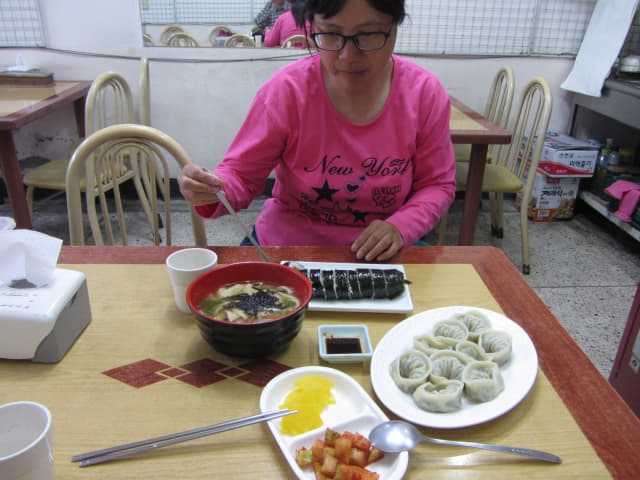

很驚險的在離寶城大韓茶園．第二茶園不太遠的「삼장」巴士站登上了巴士, 巴士車長的駕駛技術只可用「勇和狠」來形容, 有如跑馬, 約下午四時半便抵達終點站 — 寶城長途汽車客運站, 正式結束了寶城大韓茶園和寶城大韓茶園」第二茶園這精彩行程。接著是轉乘高速巴士返回順天, 而順天的行程也來到尾聲了。

寶城長途汽車客運站大樓一樓售票大堂
下了車, 進入月台旁的寶城長途汽車客運站大樓, 也順便拍了貼在牆上的巴士時刻表, 希望對計劃來寶城旅遊的朋友有幫助。
乘豪華巴士返順天
往售票處買了兩張往順天 (순천)的巴士車票, 和來的時候一樣, 每位是 6,300 韓元。
買了車票, 便走往月台等候。只等了兩至三分鐘, 一輛巴士於下午四時四十分駛來月台, 看見車頭的玻璃窗貼上了「순천」這兩個符號, 便馬上走前問問車長, 他示意是往順天的。
登上了車箱, 才知道是豪華巴士, 座位非常寬敞舒適, 莫非這便是頭等巴士? 坐了不知多少次韓國高速巴士, 記得這還是第一次, 又是一個新體驗。
順天綜合巴士客運站 (순천 종합버스터미널)
豪華巴士約下午四時四十五分從寶城長途汽車客運站開去, 交通一路暢通, 沿途停靠了幾個站, 於下午五時五十分抵達順天綜合巴士客運站。
順天下集市對面餐館 簡單晚餐
下了車, 離開順天綜合巴士客運站, 沿馬路走一會便來到順天下集市對面的店舖, 想起今天的交通費用十分昂貴, 晚餐要節省一些, 便在一間裝修不起眼的餐館吃晚餐。叫了一條飯團、一碟餃子(九個)和一蜿烏冬, 真是十分簡單, 有點像早餐。

份量一般, 配菜也很少, 吃得並不飽, 但總算吃了晚餐, 結帳是12,000韓元, 發覺並不便宜, 比起昨晚的湯飯還要貴一些! 早知這樣, 不如 Encore 湯飯, 又便宜、又飽。